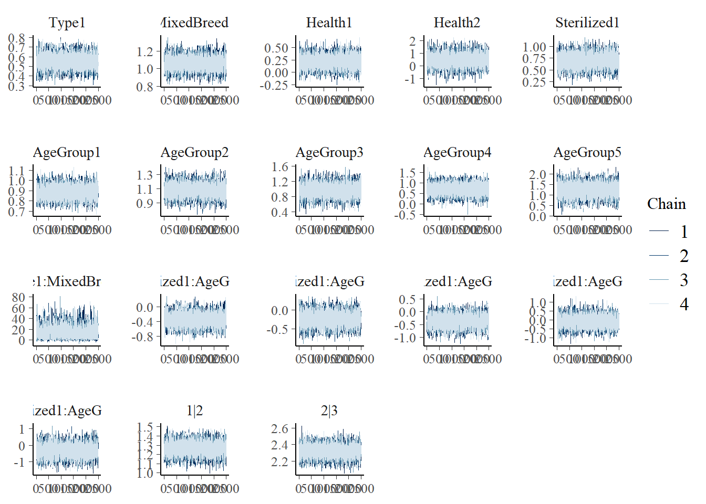
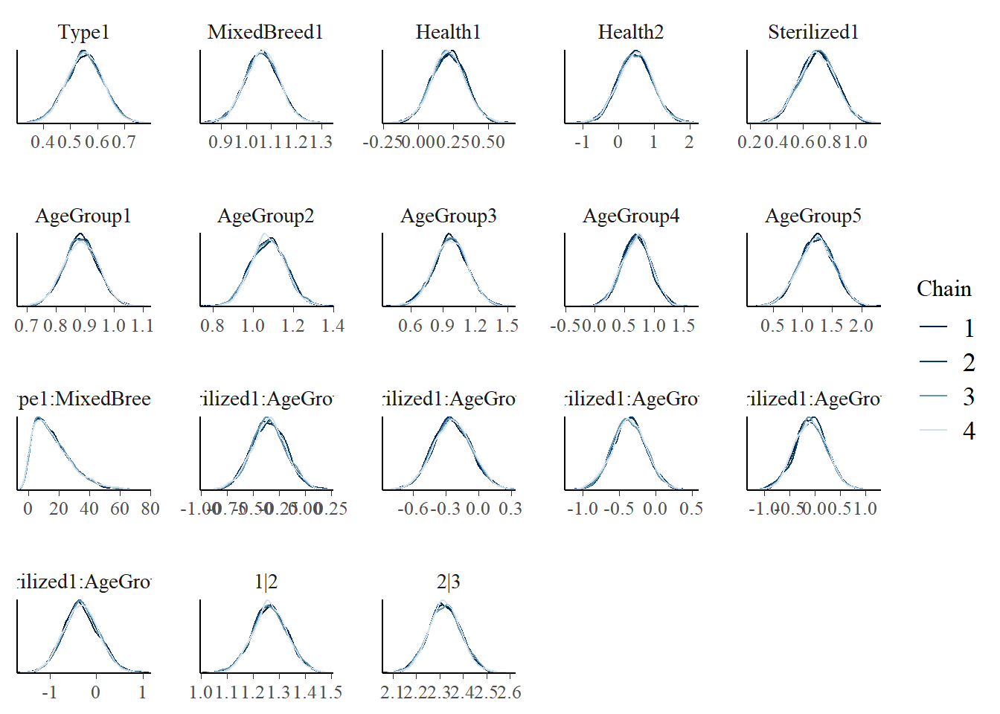
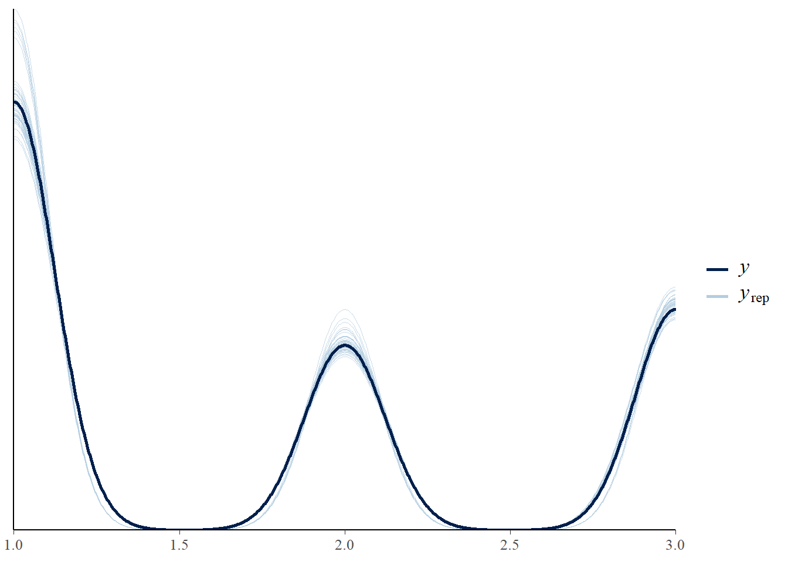

Chapter 8 Final Model
Finally! We are ready for our final model! Now, let’s use our test and train data.
load('adoption.RData')
set.seed(454)
adoption_split <- initial_split(adoption, prop = .7)
adoption_train <- training(adoption_split)
adoption_test <- testing(adoption_split) # set.seed(454)
# adoption_train <- adoption_train[sample(1:nrow(adoption_train), 500,
# replace=FALSE),]
# adoption_test<-adoption_test[sample(1:nrow(adoption_test),250,replace=FALSE),]8.1 Model Building
\[ \text{Let }Y_i\text{ be the adoption speed with k=0,1,2.} \\y_i|(\beta_{0k},\beta_1,...,\beta_15)\sim Bern(\theta_{ki})\text{ where }\theta_{ki}\text{ is the }P(Y_i\leq k)\text{ for the }i^{th}\text{ animal.} \\log(\frac{\theta_{ki}}{1-\theta_{ki}})=logit(\hat P(Y\leq k))=\beta_{k0}+\beta_1x_1...+\beta_{10}x_{10}+\beta_{11}x_1*x_10+\beta_{12}x_2*x_5+...+\beta_{16}x_2*x_9 \\\text{ where }x_i\text{ for i from 1 to 10 is the indicator for cat, minor/severe injury,} \\\text{sterilization, age groups 1-5, and Mix breed.} \\\beta_{12}\text{ is the coefficient for the interaction term of Type*MixedBreed, and }\beta_{13}\text{ to } \\\beta_{16}\text{ are the coefficients for the interaction terms of AgeGroup*Sterilization.} \\\beta_{k0}\sim N(m_{k0},s_{k0}^2) \\\beta_1\sim N(m_1,s_1^2) \\...\]
8.2 Diagnostic Plots
Let’s look at some diagnostic plots! The trace plots show that all chains overlap without a pattern. The density plot also shows chains overlapping. The pp_check also shows no abnormal patterns.



8.3 Posterior Inference
## mean mcse sd 10%
## Type1 0.55324562 5.450454e-04 0.067972248 0.46483044
## MixedBreed1 1.06318355 6.057704e-04 0.069597623 0.97480407
## Health1 0.21518841 1.110681e-03 0.122186905 0.06095336
## Health2 0.46906848 4.657286e-03 0.485278981 -0.15002129
## Sterilized1 0.70538087 1.342419e-03 0.140259684 0.52140574
## AgeGroup1 0.88612023 5.265084e-04 0.059696574 0.80957865
## AgeGroup2 1.07574108 8.196934e-04 0.087154667 0.96498714
## AgeGroup3 0.97119919 1.484276e-03 0.160364847 0.76596417
## AgeGroup4 0.69497692 2.420120e-03 0.245471775 0.38302011
## AgeGroup5 1.23313469 2.739425e-03 0.301253163 0.84356176
## Type1:MixedBreed1 16.38712159 2.788769e-01 12.224207824 3.10183396
## Sterilized1:AgeGroup1 -0.34854266 1.592412e-03 0.166436814 -0.56054245
## Sterilized1:AgeGroup2 -0.24287677 1.695753e-03 0.174026062 -0.46464188
## Sterilized1:AgeGroup3 -0.36499681 2.226908e-03 0.231066947 -0.65942334
## Sterilized1:AgeGroup4 -0.08299334 3.264202e-03 0.321884568 -0.49697579
## Sterilized1:AgeGroup5 -0.32553321 3.801849e-03 0.381588876 -0.81327658
## 1|2 1.26453439 5.979261e-04 0.068066142 1.17738499
## 2|3 2.32111604 6.076589e-04 0.071312780 2.22969547
## mean_PPD:1 0.51028151 7.234882e-05 0.007008311 0.50135325
## mean_PPD:2 0.22274171 5.927455e-05 0.006181765 0.21489661
## 50% 90% n_eff Rhat
## Type1 0.5533768 0.64007248 15552 0.9996826
## MixedBreed1 1.0631939 1.15079427 13200 0.9997197
## Health1 0.2147546 0.36975078 12102 0.9999215
## Health2 0.4669237 1.08419208 10857 0.9998238
## Sterilized1 0.7071647 0.88462549 10917 1.0003414
## AgeGroup1 0.8856529 0.96257346 12855 0.9997073
## AgeGroup2 1.0755650 1.18602234 11305 0.9997492
## AgeGroup3 0.9709156 1.17491749 11673 0.9997387
## AgeGroup4 0.6991856 1.00797587 10288 0.9999504
## AgeGroup5 1.2372309 1.61889575 12093 0.9997890
## Type1:MixedBreed1 13.8552125 33.40589650 1921 1.0013566
## Sterilized1:AgeGroup1 -0.3501312 -0.13333359 10924 0.9999779
## Sterilized1:AgeGroup2 -0.2457145 -0.02067051 10532 1.0000624
## Sterilized1:AgeGroup3 -0.3655172 -0.06871630 10766 0.9999318
## Sterilized1:AgeGroup4 -0.0837725 0.32655525 9724 0.9998016
## Sterilized1:AgeGroup5 -0.3358608 0.17423792 10074 0.9998414
## 1|2 1.2637562 1.35222578 12959 0.9997043
## 2|3 2.3203994 2.41246188 13773 0.9996658
## mean_PPD:1 0.5103389 0.51921620 9383 0.9998999
## mean_PPD:2 0.2227996 0.23048609 10876 1.0001687set.seed(454)
model_data<-adoption_test %>%
dplyr::select(AdoptionSpeed_Group,Type,Health,AgeGroup,MixedBreed,Sterilized) %>%
na.omit()
final_prediction <- posterior_predict(
final_model,
newdata = model_data)
ordinal_accuracy2(final_prediction,model_data)## [1] 0.55315918.4 Discussion
What this model tells us. Which factors are important? What can we do to improve our model (cuteness meter)?